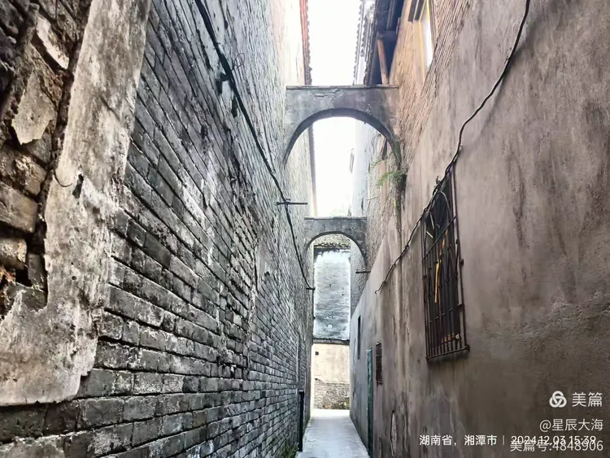

本章系统梳理城正街有形资源（36处文保单位+41处历史建筑+26处闲置资产约3.3万㎡）、无形资源（162项非遗+红色文化+名人文化+8个老字号）、旅游资源（10处片区内资源+6处周边联动），建立"历史/艺术/科学/社会/经济"五维价值评估体系，对15项重点资源进行评分，明确十大核心资源和三级分级（核心级/重要级/一般级）。
① 五维价值评估体系作为资源评估方法，十大核心资源作为重点保护利用对象；
② 26处闲置资产（约3.3万㎡）作为产业导入和业态升级的核心空间载体；
③ 老字号资源（龙牌酱油、义和斋等8个品牌）是商业复兴的核心抓手，建议在功能业态板块重点展开。
引言：研究范围与方法
资源是片区更新的物质基础和文化根基。城正街片区作为湘潭城市记忆最集中的区域，拥有丰富的历史文化建筑、闲置资产、街巷格局、自然生态等有形资源，以及非物质文化遗产、红色文化、名人文化、老字号等无形资源。本专题系统梳理片区内各类资源资产，建立完整的资源清单，进行五维价值评估，明确每处重点资源的利用方向。
01资源分类体系
历史文化建筑（36文保+41历史建筑+31特色风貌）、闲置资产（26处建筑+18处土地）、老旧厂区与街区、街巷格局与空间（一街三片七巷+三街并行+城门码头）、自然与生态（雨湖公园+湘江滨水带+古树古井）
历史文化（城总文化+会馆文化+书院文化+商帮文化）、非物质文化遗产（162项）、红色文化、名人文化（15位）、老字号与传统商业、地名遗产与历史传说
采用"五维价值评估法"，对每处重点资源从五个维度进行1-5分评分：历史价值（×0.3）、艺术价值（×0.2）、科学价值（×0.15）、社会价值（×0.15）、经济价值（×0.2）。综合评分=历史价值×0.3+艺术价值×0.2+科学价值×0.15+社会价值×0.15+经济价值×0.2。
一、有形资源系统梳理
1.1历史文化建筑资源
片区内共有文物保护单位36处，其中国家级1处（关圣殿/北五省会馆）、省级10处（太真芝药室、湘潭文庙、江西会馆、夕照亭、张家祠堂、抗日阵亡将士纪念碑、南楼、毛泽东青年时代活动旧址、湘潭一大桥、天主教堂）、市级若干、一般文物19处。历史建筑41处，主要为清末民初的传统民居、商业建筑和会馆建筑。特色风貌建筑31处，包括苏式建筑、民国风格建筑等。
核心保护范围内86处、建设控制地带内141处、老旧小区79处，合计306处。整治方式：立面改造（约60%）、降层处理（约15%）、拆除重建（约10%）、遮挡弱化（约15%）。
1.2闲置资产资源
26处闲置建筑按类型分：办公类8处（疾控中心、税务局、交通局、邮政局等）、工业类5处（食杂果品仓库、印刷厂、新多福食品厂、无线电二厂、日杂公司仓库）、商业类4处（大同世界综合楼12918㎡等）、历史建筑类5处（红楼、太真芝药室、原派出所等）、其他4处。闲置土地18处13.11公顷，其中已批未建8.69公顷、已征未用4.42公顷。
▎办公类闲置（8处，约9655㎡）
| 序号 | 名称 | 面积(㎡) | 产权人 | 拟利用方向 |
|---|---|---|---|---|
| 1 | 县人民医院 | 1759.72 | 湘潭县人民医院 | 社区医疗+养老服务 |
| 2 | 疾控中心 | 3636 | 湘潭市卫健委 | 青创办公大楼+众创空间 |
| 3 | 原雨湖区税务局 | 422（两栋） | 湖南省税务局 | 教研培训基地 |
| 4 | 原湘潭县交通局 | 551（三栋） | 湘潭县交通局 | 社区服务+文创办公 |
| 5 | 原湘潭县邮政局 | 197 | 市资产经营管理公司 | 邮政文化展示+便民服务 |
| 6 | 原社区集团办公楼 | 839.48 | 湘潭新景建筑工程 | 社区邻里中心 |
| 7 | 潭房集团办公楼 | 972 | 潭房集团 | 文创办公+展示 |
| 8 | 原鼎盛置业 | 1277.63（两栋） | 湘潭大河西棚改 | 酒店配套+办公 |
▎工业/仓储类闲置（5处，约9921㎡）
| 序号 | 名称 | 面积(㎡) | 产权人 | 拟利用方向 |
|---|---|---|---|---|
| 1 | 原食杂果品公司仓库 | 4072.42 | 城发集团 | 文创园区+市集 |
| 2 | 原县印刷厂 | 667 | 湘潭市工改办 | 古城民宿+青年创业 |
| 3 | 原新多福食品厂 | 494 | 城发集团 | 品牌酒店（亚朵等） |
| 4 | 原无线电二厂 | 922（建筑群） | 市资产经营管理 | 文创园区+艺术工作室 |
| 5 | 市生资日杂公司仓库 | 3766.12 | — | 城总记忆场+游客中心+米粉体验馆 |
▎商业类闲置（4处，约13906㎡）
| 序号 | 名称 | 面积(㎡) | 产权人 | 拟利用方向 |
|---|---|---|---|---|
| 1 | 大同世界综合楼 | 12918.75 | 湘潭大同实业股份 | 综合商业+酒店+办公 |
| 2 | 综合楼1、3门面 | 491 | 城发集团 | 特色餐饮+文创零售 |
| 3 | 平湖小区商铺 | 117.77 | 韶山东路建设开发 | 社区便民商业 |
| 4 | 平政路425号2层 | 378 | 新景集团 | 文创零售+展示 |
▎历史建筑类闲置（5处，约2325㎡）
| 序号 | 名称 | 面积(㎡) | 产权人 | 拟利用方向 |
|---|---|---|---|---|
| 1 | 红楼 | 800 | 湘潭大河西棚改 | 红色文化展示+研学 |
| 2 | 太真芝药室 | 115.59 | 湘潭市房地产管理局 | 传统药号展示+中医药体验 |
| 3 | 原收容遣送站 | 1060.55 | 地产集团（两型投） | 民宿+文化展示 |
| 4 | 老城正街派出所 | 149 | 雨湖公安分局 | 社区邻里中心 |
| 5 | 老伞厂民居 | 200-300 | — | 体育+非遗多元公共空间 |
▎其他类闲置（4处，约1809㎡）
| 序号 | 名称 | 面积(㎡) | 产权人 | 拟利用方向 |
|---|---|---|---|---|
| 1 | 原印刷厂低效空地 | 498 | 城发集团 | 口袋公园+停车场 |
| 2 | 杜家巷1,3,4号+通济门5,7,9号 | 300.34 | 原雨湖房管所 | 传统民宿+文创 |
| 3 | 杜家巷11号 | 41.76 | 欣园达置业 | 文创小店 |
| 4 | 国企改革发展投资办公楼 | 360 | 城发集团 | 办公+展示 |
| 5 | 湖园路27号 | 351.29 | 新景集团 | 社区服务 |
| 6 | 湖园路27号附1号 | 257.55 | 原平政所 | 社区服务 |
1.3街巷格局与空间资源
一街：城正街传统风貌街；三片：书院文化片区、城里头人文片区、南楼文化片区；七巷：学坪路街、泗洲庵巷、板石巷、广大香巷、城隍庙巷、新育里巷等。
河街（前街）：批发、码头服务；正街：设"总"，零售商业核心；后街：会馆、庙宇、住宅。是"金湘潭"商业文明的空间载体。
观湘门（南门）、熙春门（东门）、通济门（西门）、文星门（小东门）、拱极门（北门）、瞻岳门（西北门）。
小东门码头（市级文保）、十二总码头（一般文物）、其他十八总对应码头。
历史街区保护范围：26公顷（核心9.689公顷+建控16.3公顷），界限为西至瞻岳门路、北至熙春门路、东至观湘门路、南至沿江东路。以下街巷格局资源需区分"保护范围内"与"周边联动"：
六座古城门：为明代湘潭古城城门，现多已不存仅为遗址。观湘门（东边界）、熙春门（北边界）、瞻岳门（西边界）位于保护范围边界线上；文星门（小东门，近文庙）在保护范围内；通济门（西门）、拱极门（北门）位于保护范围外或边界附近，属周边历史文化资源。
古码头遗址：沿湘江从一总至十八总分布。小东门码头（市级文保）在保护范围内；十二总码头（一般文物）及其他十八总对应码头大部分位于保护范围外，属滨江联动资源，可通过滨江风光带串联。
三街并行格局：正街（城正街）完整位于保护范围内；后街（会馆、庙宇、住宅）大部分在保护范围内；河街（前街，批发码头服务）紧邻湘江，部分因城市建设已改变，现存片段位于保护范围南缘。策划中应区分"保护范围内严格保护"与"周边范围联动利用"两类资源，避免将城外资源纳入历史街区保护要求。
1.4自然与生态资源
雨湖公园是片区核心绿地，湘潭老城的"绿肺"，可与城正街历史街区联动打造"公园+街区"一体化体验。湘江滨水带约2公里岸线，可发展滨江步道、码头遗址景观化、城墙遗址公园、水上旅游线路。片区内保留多棵古树名木（文庙、关圣殿、雨湖公园等地），以及三义井、由义巷古井等历史水系。
1.5分区域资源汇总
文庙+昭潭书院+曙光学校、刘道一烈士祠、塔公祠、抗日纪念碑、太真芝药室、原印刷厂/税务局/派出所等闲置资产。文化资源最集中，是更新核心引擎。
关圣殿（国家级）、江西会馆万寿宫、夕照亭、关圣殿巷古建筑群、曾家巷古建筑群。会馆文化最集中，是商业文明核心展示区。
传统民居成片、南楼、天主教堂、大同世界综合楼（12918㎡闲置）、滨江风光带。大型闲置商业资产可作为产业导入载体。
二、无形资源系统梳理
2.1四大文化特色叠加
| 文化类型 | 核心内涵 | 利用方向 |
|---|---|---|
| 城总文化 | 全国独有的街道通名制度，800年历史，十八总空间格局 | 城总文化超级IP、十八总主题游线、数字展示馆 |
| 会馆文化 | 明清十三省商人云集，约40处会馆，"金湘潭"见证 | 会馆文化展示群、商帮文化研学、建筑艺术展示 |
| 书院文化 | 文庙-昭潭书院-曙光学校延续近千年，"庙学合一" | 祭孔大典、儒家文化展示、书院文化研学 |
| 商帮文化 | 持续340多年商业辉煌，五维内涵（历史久/规模大/商贾多/百业备/财赋甲） | "金湘潭"商业文化博物馆、传统业态复原、主题文创 |
城总文化全国独有，是湘潭区别于其他历史街区的核心文化IP；会馆文化、书院文化、商帮文化叠加，形成了高密度、高独特性的文化资源集群。
2.2非物质文化遗产（162项）
国家级非遗2项：青山唢呐（传统音乐）、巫家拳（传统体育）。省级非遗与片区相关的包括：湘潭花鼓戏、纸影戏、灯芯糕制作技艺（义和斋）、龙牌酱油酿造技艺、油纸伞制作技艺、湘潭米粉制作技艺、左氏十八总活鱼烹饪技艺等。市级非遗包括湘潭虾舞、择子豆腐、老细红酱、马家河黑山羊、沙子岭猪等。传统手工艺包括木雕、石雕（关圣殿蟠龙柱为代表）、泥塑（鲁班殿门楼）、竹编。
2.3红色文化资源
城正街片区是湘潭红色文化的重要发源地。红色文化遗址包括：毛泽东青年时代活动旧址（毛福昌号+三义井+宽裕粮行）、塔公祠（1926年湘潭县第一次农民代表大会、1927年毛泽东农运座谈会）、刘道一烈士祠（同盟会会员，萍浏醴起义）、杨昭植就义处（湘潭地委书记，1927年就义）、抗日阵亡将士纪念碑（1938年立）。红色文化内涵涵盖毛泽东与湘潭、农民运动、辛亥革命、大革命时期、抗日战争。
2.4名人文化与老字号资源
名人文化资源：城正街片区关联历史名人约16位，涵盖学术大家（王闿运、张九镒）、政治军事（龚承钧、塔齐布、郭松林）、革命先驱（刘道一、杨昭植）、文化艺术（齐白石、黎锦晖、吕骥）、近现代名人（毛泽东、宋楚瑜）等多个类型。名人文化的详细生平、与城正街的关联及一览表见第一章"名人辈出"专题，本章不再重复罗列。从资源价值角度看，名人文化资源的核心价值在于社会影响力和文化品牌价值，但目前缺乏实体载体和展示场景，属于"有故事、无空间"的沉睡资源。利用方向：名人故居/足迹标识系统、名人主题展陈空间、名人文化研学课程、名人IP文创产品开发。
老字号与传统商业资源：片区内可考证的老字号品牌包括龙牌酱油（1740年创立，中国驰名商标）、义和斋灯芯糕（400多年历史，湘潭名点）、左氏十八总活鱼（1898年创立）、太真芝药室（清末药号）、协和公酱园、湘真一药号、十八总大码头米粉、郭记传统米粉等。传统商业业态涵盖药都、米市、茶市、票号（8家山西票号）、酱园、绸缎店、粮行。老字号资源是"金湘潭"商业文明的活态见证，具有较高的经济价值和社会价值，是城正街商业复兴的核心抓手。利用方向：老字号集中展示街区、老字号技艺体验、老字号品牌复兴、传统商业文化博物馆。
2.5地名遗产与历史传说
地名遗产包括唐氏义门（明永乐二年1404年）、三义井、洗脚桥、六座古城门、十八总地名等。历史诗文包括清·张九镒《湘潭》、清·周系英《湘潭竹枝词》、秋瑾《过湘潭》、杨昭植《就义前题壁诗》。利用方向：地名遗产标识系统、历史诗文石刻/展示、传说故事数字化展示（AR/VR）、"古城可阅读"导览系统。
三、旅游资源梳理
3.1片区内旅游资源点（10处）
关圣殿（国家级文保，会馆文化展示+研学）、江西会馆万寿宫（省级文保，江西文化+特色餐饮）、湘潭文庙（省级文保，儒家文化+祭孔+研学）、城正街历史街区（省级历史文化街区，历史街区体验+商业）、雨湖公园（城市公园，休闲+夜间经济）、抗日阵亡将士纪念碑（省级文保，爱国主义教育）、刘道一烈士祠（市级文保，红色文化+研学）、塔公祠遗址（红色遗址，农运历史展示）、滨江风光带（城市滨水，休闲+观光）、夕照亭（省级文保，观景+历史展示）。
3.2周边旅游资源联动
万楼（约3公里，4A，湘江文化旅游带联动）、窑湾历史文化街区（约2公里，省级历史文化街区，差异化联动）、九华湖德文化公园（约5公里）、昭山（约15公里，4A）、盘龙大观园（约10公里，4A）、韶山（约40公里，5A，红色旅游联动）。
资源品级较高（国家级文保1处+省级文保10处+省级历史文化街区1处）；资源组合良好（历史文化+红色文化+生态休闲+商业体验）；区位优势明显（长株潭半小时经济圈）；联动条件优越（与万楼、窑湾、九华湖等形成湘江文化旅游带）。
四、资源价值评估
4.1重点资源五维价值评估表
| 资源名称 | 历史 | 艺术 | 科学 | 社会 | 经济 | 综合 | 等级 |
|---|---|---|---|---|---|---|---|
| 关圣殿（北五省会馆） | 5 | 5 | 4 | 5 | 5 | 4.85 | 核心 |
| 城正街历史街区 | 5 | 4 | 4 | 5 | 5 | 4.65 | 核心 |
| 江西会馆万寿宫 | 5 | 5 | 4 | 4 | 4 | 4.55 | 核心 |
| 城总文化 | 5 | 3 | 4 | 5 | 5 | 4.45 | 核心 |
| 湘潭文庙 | 5 | 4 | 4 | 5 | 4 | 4.45 | 核心 |
| 会馆文化 | 5 | 4 | 3 | 4 | 4 | 4.15 | 重要 |
| 昭潭书院-曙光学校 | 5 | 3 | 3 | 5 | 4 | 4.10 | 重要 |
| "金湘潭"商业文化 | 5 | 2 | 3 | 5 | 5 | 4.10 | 重要 |
| 红色文化资源 | 5 | 2 | 3 | 5 | 4 | 3.95 | 重要 |
| 非物质文化遗产 | 4 | 4 | 3 | 4 | 4 | 3.85 | 重要 |
| 老字号资源 | 4 | 2 | 2 | 4 | 5 | 3.50 | 重要 |
| 闲置资产（26处） | 3 | 2 | 2 | 3 | 5 | 3.05 | 重要 |
| 雨湖公园 | 3 | 3 | 2 | 5 | 4 | 3.40 | 一般 |
| 滨江风光带 | 2 | 3 | 2 | 5 | 4 | 3.10 | 一般 |
| 名人文化资源 | 4 | 2 | 2 | 4 | 3 | 3.10 | 一般 |
4.2资源三级分级结果
- 关圣殿（北五省会馆）
- 城正街历史街区
- 江西会馆万寿宫
- 城总文化
- 湘潭文庙
- 会馆文化
- 昭潭书院-曙光学校
- "金湘潭"商业文化
- 红色文化资源
- 非物质文化遗产
- 老字号资源
- 闲置资产（26处）
- 雨湖公园
- 滨江风光带
- 名人文化资源
- 街巷格局
- 古树名木
4.3资源总体特征
文化资源密度高——3.16平方公里内集中了1处国家级文保、10处省级文保、41处历史建筑，文化资源密度在湖南省内罕见；文化独特性强——城总文化全国独有，会馆文化、书院文化、红色文化叠加，文化辨识度高；闲置资产集中——26处闲置建筑+13.11公顷闲置土地，为产业导入提供了空间载体；生态本底优越——雨湖公园+湘江滨水带，生态资源与文化资源叠加；产权关系复杂——闲置资产涉及十多个产权人，协调难度大；活化利用不足——多数文保和历史建筑仍为静态保护，活态利用不够。
五、资源利用方向建议
5.1四类利用方向
36处文保（修缮保护+文化展示）、41处历史建筑（修缮+功能更新）、若干传统风貌建筑（风貌整治+居住改善）、227处不协调建筑（立面改造/降层/拆除）、一街七巷（风貌提升+慢行系统）。
疾控中心3636㎡→青创办公；食杂仓库4072㎡→文创园区；大同世界12918㎡→综合商业+酒店；新多福食品厂→品牌酒店；印刷厂→古城民宿+青年创业；税务局→教研培训基地；日杂仓库3766㎡→城总记忆场。
关圣殿→会馆文化博物馆；江西会馆→江西文化体验中心；文庙→儒家文化研学基地；昭潭书院→书院文化体验；塔公祠→红色文化展示馆；城正街主街→历史街区体验；滨江码头→水上旅游。
县人民医院1759㎡→社区医疗+养老服务；原派出所149㎡→社区邻里中心；原社区集团办公楼839㎡→社区服务+党建；闲置土地约4公顷→养老、托育、文化、体育设施。
5.226处闲置资产利用优先级
高优先级（近期启动）：市生资日杂公司仓库（城总记忆场+游客中心+米粉体验馆）、疾控中心办公楼（青创办公大楼+众创空间）、大同世界综合楼（综合商业+酒店+办公）、原食杂果品公司仓库（文创园区+市集）、原新多福食品厂（品牌酒店）。中优先级：原雨湖区税务局（教研培训基地）、原县印刷厂（古城民宿+青年创业）、太真芝药室（传统药号展示+中医药体验）、红楼（红色文化展示+研学）、老城正街派出所（社区邻里中心）。低-中优先级：其他16处约5000㎡，用于社区服务、文创、商业等。
六、资源利用的约束条件
国家级文保1处：不改变文物原状，修缮需国家文物局审批；省级文保10处：不改变原状，省文物局审批；市级文保若干：保护为主，合理利用；一般文物19处：保护历史信息，可适度改造。
核心保护范围9.689公顷：不得新建扩建，建筑高度≤9米；建设控制地带16.3公顷：新建须符合高度体量色彩材质要求，高度≤18米；风貌协调区：按控规执行。
闲置土地用地性质变更需规划调整程序；工业用地转商业/文旅需补缴土地出让金；居住用地内商业功能需符合"住改商"规定。
26处闲置资产涉及十多个产权人：城发集团约8处、机关事业单位约8处、市资产经营公司约3处、企业约5处、房管部门约2处。跨部门跨层级协调难度大，部分产权不清。建议成立市级产权协调小组。
文保建筑修缮36处约1.5-2亿元；历史建筑修缮41处约0.8-1.5亿元；不协调建筑整治227处约1-2亿元；闲置资产改造26处约1-1.5亿元；街巷空间提升约0.5-1亿元。合计约4.8-8亿元。
七、核心结论与十大核心资源

7.1资源总体特征总结
文化资源密度极高，独特性强——城总文化全国独有，会馆文化、书院文化、红色文化叠加，是湘潭历史文化的核心承载区；闲置资产集中，盘活潜力大——26处闲置建筑约3.5万㎡+13.11公顷闲置土地，为产业导入提供了充足空间；生态本底优越，文旅融合条件好——雨湖公园+湘江滨水带，文化资源与生态资源叠加；产权关系复杂，协调难度大——闲置资产涉及十多个产权人，需要市级层面统筹协调；活化利用不足，价值未充分释放——多数文保和历史建筑仍为静态保护，活态利用和经济价值转化不够。
7.2十大核心资源识别
城正街片区的资源价值，不在于单处建筑的精美，而在于多种文化资源的高密度叠加和全国独有的城总文化IP。资源梳理的深度，决定了产业策划的高度——只有真正摸清家底、评估价值，才能让每一处资源都找到最合适的利用方向。
本章对片区策划的建议
推荐直接采用：①五维价值评估体系（历史价值、艺术价值、科学价值、社会价值、经济价值）作为资源评估方法；②十大核心资源清单（关圣殿、城正街历史街区、江西会馆、城总文化、湘潭文庙等）作为重点资源保护利用对象；③三级资源分级（核心级/重要级/一般级）作为资源保护强度和开发强度的分级依据；④闲置资产清单（26处，约3.3万㎡）作为产业导入的空间载体。
建议转化使用：①有形资源的详细清单（36处文保+41处历史建筑+26处闲置资产）建议作为附表，策划正文用分类统计和空间分布图呈现；②名人文化资源本章已做去重处理，仅从资源价值角度分析，详细名人信息见第一章，策划方案中应避免两处重复展开；③老字号资源（龙牌酱油、义和斋等8个品牌）是商业复兴的核心抓手，建议在功能业态板块重点展开老字号招商和品牌复兴策略。
不建议纳入策划正文：单处资源的详细历史考证、资源评估的具体打分过程。这些作为研究基础存档，策划方案应聚焦"资源—利用方向—产业导入"的转化逻辑。